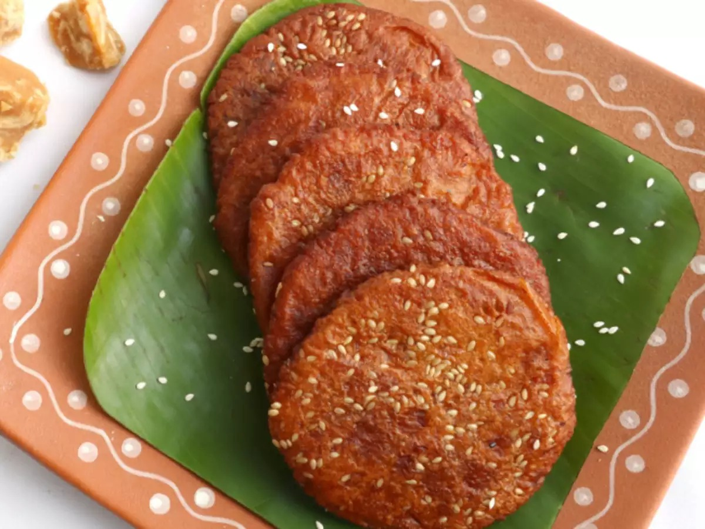

(A)
riselu
Back

Ariselu
Traditional South Indian Sweet
Total Calories: 200 calories per piece
Ingredients:
1 cup rice flour - Used for the outer dough.
1 cup jaggery - Provides natural sweetness.
½ cup water - To form the dough.
1 tablespoon sesame seeds - For flavor and crunch.
2 tablespoons ghee - For greasing and cooking.
1 teaspoon cardamom powder - Adds aroma to the filling.
Method:
Step 1 - Preparing the dough
Mix rice flour and water to form a smooth, soft dough. Set aside to cool.
Step 2 - Making the filling
Heat jaggery and a little water in a pan, melting the jaggery until it forms a sticky syrup. Add cardamom powder and sesame seeds to enhance flavor.
Step 3 - Shaping Ariselu
Take a small portion of dough, make a hole in the center, and stuff with the jaggery mixture. Flatten into a disc shape.
Step 4 - Cooking
Heat ghee in a pan and cook each piece of Ariselu until both sides turn golden brown and crispy.
Step 5 - Serving
Serve warm, and enjoy the rich taste of traditional Ariselu.